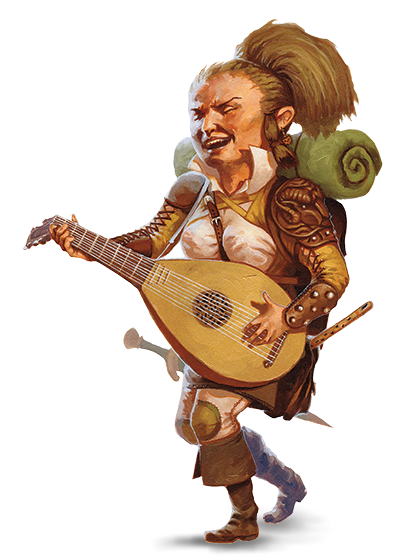

Halfelin
Description¶
Une maison confortable, voilà le but de la plupart des halfelin : un endroit où se poser en paix et profiter du silence loin des monstres errants et des armées en guerre ; une cheminée crépitante et un repas généreux ; une bonne boisson accompagnée d'une bonne conversation. Même si la plupart des halfelins passent leur vie dans des communautés agricoles quelque peu recluses, certains forment des groupes errants qui voyagent en permanence, attirée par la route et l'inconnu afin de découvrir les merveilles de nouveaux territoires ou de nouvelles cultures. Mais même ces voyageurs adorent la paix, la bonne nourriture, l'amour et leur chez-soi, même si ce foyer peut très bien être une petite roulotte qui suit péniblement un chemin de terre.

Petits et Pratiques¶
Les petits halfelins survivent dans un monde peuplé par des créatures plus grandes en évitant d'attirant l'attention ou, si ce n'est possible, en essayant de ne pas offenser. Mesurant environ 90 cm, ils semblent relativement inoffensifs et ont ainsi pu survivre pendant des siècles dans l'ombre des plus grands empires et en restant à l'abri des guerres et autres conflits politiques. Ils sont plutôt costauds, pesant entre 20 et 25 kg.
La peau des halfelins va du bronzé au pâle avec un teint vermeil, et leurs cheveux sont généralement bruns ou châtain et ondulé. Ils ont des yeux bruns ou noisettes. Les hommes halfelins affichent de longs favoris, mais la barbe est rare et les moustaches encore plus. Ils apprécient porter de simples et confortables vêtements, favorisant les couleurs vives.
L'aspect pratique des halfelins s'étend au-delà de leurs vêtements. Ils ne soucient que des besoins primaires et des plaisirs simples et n'ont que faire des biens ostentatoires. Même les plus riches de halfelins gardent leurs trésors verrouillés dans un grenier plutôt que de les afficher dans des vitrines. Ils ont un truc pour trouver la solution la plus évidente à un problème, et n'ont pas vraiment de patience pour tergiverser.
Sous-races¶
Les différentes sous-races de halfelins sont plus comme des familles distantes que de véritables sous-races. On en compte trois :
| Sous-race | Description |
|---|---|
| Halfelin pied-léger | Halfelins habiles et charismatiques, les plus répandus |
| Halfelin robuste | Halfelins à la constitution solide, un peu moins répandus |
| Halfelin sagespectre | Halfelins appartenant à des familles isolées, plutôt rares |
Culture¶
Gentils et Curieux¶
Les halfelins sont un peuple aimable et amical. Ils chérissent les liens familiaux et l'amitié ainsi que le confort du cœur et du foyer, ne portant que peu de rêves d'or et de gloire. Même les aventuriers parmi eux ne font que parcourir le monde pour des raisons de communauté, d'amitié, de soif de découverte ou de curiosité. Ils adorent découvrir de nouvelles choses, même les plus simples, comme une nourriture exotique ou un style vestimentaire nouveau.
Les halfelins sont facilement affectés par la pitié et ils détestent, voire d'autres êtres vivants souffrir. Ils sont généreux, partageant avec plaisir ce qu'ils ont même dans les temps les plus durs.
Caméléons¶
Les halfelins sont particulièrement adeptes à l'intégration dans une communauté, soit-elle d'humains, de nains ou même d'elfes. Ils savent se rendre utiles et donc bienvenus. La combinaison de leur discrétion innée et de leur nature innocente les aide à éviter toute attention non désirée.
Les halfelins collaborent bien volontiers et ils sont loyaux envers leurs amis, que ceux-ci soient des halfelins ou non. Ils peuvent afficher une extraordinaire férocité lorsqu'il s'agit d'aider ou de protéger leurs amis, leur famille ou leur communauté.
Plaisirs Pastoraux¶
La plupart des halfelins vivent dans des petites communautés paisibles avec d'immenses fermes et des bosquets bien entretenus. Ils ne constituent que rarement leur propre royaume ou ne possèdent de terres au-delà de leurs comtés. Ils ne reconnaissent pas vraiment de noblesse halfeline ou de royauté, se tournant plutôt vers les doyens de la famille pour les guider. Les familles conservent leurs traditions malgré les successions d'empires.
Beaucoup d'halfelins vivent au sein d'autres races, où leur dur labeur et leur loyauté leur octroie de larges récompenses et un confort de vie indéniable. Quelques communautés halfelines ont choisi l'itinérance, conduisant chariots et/ou naviguant de lieux à lieux et ne conservant aucun domicile fixe.
[!abstract] Aimables et Positifs Les halfelins essayent de bien s'entendre avec tous mais ont la généralisation facile — surtout quand il s'agit de préjugé négatif.
Nains. "Les nains font de bons amis et vous pouvez compter sur eux pour garder leur parole. Mais franchement, ça les tuerait de sourire une fois de temps en temps ?"
Elfes. "Ils sont si magnifiques ! Leur visage, leur musique, leur grâce et tout. C'est comme s'ils sortaient tout droit d'un rêve. Mais on ne peut pas dire ce qu'il se cache derrière leurs sourires — probablement plus que ce qu'ils ne montrent"
Humains. Les humains nous ressemblent beaucoup, vraiment. Enfin, au moins certains d'entre eux… Si vous prenez la peine de sortir des châteaux et des gardes et allez parler aux fermiers et éleveurs, vous trouverez de bons et solides gaillards. Non pas qu'il y ait un problème avec les barons et les soldats — vous devez admirer leur conviction ! Et en protégeant leurs terres, ils nous protègent aussi un peu.
Explorateurs d'Opportunités¶
Les halfelins se mettent généralement à l'aventure pour défendre leur communauté, soutenir leurs amis ou explorer un monde vaste et rempli de merveilles. Pour eux, l'aventure est moins une carrière qu'une opportunité ou une nécessité.
Langue¶
L'[[Langues#Halfelin|Halfelin]] n'est pas secret, mais les halfelins sont réticents à le partager. Ils écrivent très peu, et il n'y a donc qu'un petit corpus de littérature halfeline. En revanche, leur tradition orale est très développée. Quasiment tous les halfelins parlent le Commun pour échanger avec les peuples des endroits qu'ils traversent.
Noms Halfelins¶
Un halfelin a un prénom, un nom de famille et parfois un surnom. Les noms de famille sont souvent les surnoms des anciens qui sont restés et ont été transmis de générations en générations.
Noms Masculins : Alton, Ander, Cade, Corrin, Eldon, Errich, Finnan, Garret, Lyle, Merric, Milo, Osborn, Perrin, Reed, Roscoe, Wellby
Noms Féminins : Andry, Bree, Callie, Cora, Euphemia, Jillian, Kithri, Lavinia, Lidda, Merla, Nedda, Paela, Portia, Seraphina, Shaena, Trym, Vani, Verna
Noms de Famille : Ramassebrousse, Bontonneau, Vertbouteille, Haucolline, Prépendu, Feuillethé, Épine, Jetpierre, Sousbourg
Halfelin pieds-légers¶
Description¶
En tant que halfelin pieds-léger, vous pouvez facilement vous cacher sans vous faire remarquer, par exemple en utilisant les autres comme couverture. Vous avez tendance à être aimable et vous entendez bien avec les autres. Ces halfelins sont les plus communs et se sont diffusés dans tout le continent.
Les pieds-léger sont plus enclins à la soif de découverte que les autres halfelins et se mêlent généralement aux autres races ou choisissent un mode de vie nomade. Ils sont occasionnellement appelés les pieds-poilu ou grands-gaillard.
Mécaniques¶
Augmentation de caractéristiques. Quand vous déterminez les caractéristiques de votre personnage, augmentez l'une de ces caractéristiques par 2 et augmentez une autre par 1, ou augmentez trois caractéristiques différentes par 1. (Conseillé : DEX +2, CHA +1)
Type de Créature. Vous êtes un humanoïde.
Langage. Vous parlez le [[Langues#Commun|Commun]] et l'[[Langues#Halfelin|Halfelin]].
Âge. Les halfelins atteignent la majorité aux alentours de 20 ans, et vivent généralement 150 ans.
Taille. Les halfelins mesurent en moyenne 90 cm et pèsent à peu près 20 kg. Votre taille est Petite (P).
Vitesse. Votre vitesse de base est de 25 ft. (7.5 m/5 cases).
Chanceux. Quand vous faites un 1 sur un d20 pour un jet d'attaque, jet de compétence ou jet de sauvegarde, vous pouvez relancer le dé et devez utiliser le nouveau résultat.
Courageux. Vous avez l'avantage aux jets de sauvegarde pour ne pas être apeuré.
Agilité Halfeline. Vous pouvez passer dans l'espace de toute créature d'une taille supérieure à la vôtre.
Discrétion Naturelle. Vous pouvez tenter de vous cacher si vous vous trouvez derrière une créature d'une taille supérieure à la vôtre.
Halfelin robuste¶
Description¶
En tant que halfelin robuste, vous êtes plus solide que la moyenne et êtes résistance aux différents poisons. Certains disent que les robustes ont du sang nain. Ils sont aussi parfois appelés cœur-vaillant.
Mécaniques¶
Augmentation de caractéristiques. Quand vous déterminez les caractéristiques de votre personnage, augmentez l'une de ces caractéristiques par 2 et augmentez une autre par 1, ou augmentez trois caractéristiques différentes par 1. (Conseillé : DEX +2, CON +1)
Type de Créature. Vous êtes un humanoïde.
Langage. Vous parlez le [[Langues#Commun|Commun]] et l'[[Langues#Halfelin|Halfelin]].
Âge. Les halfelins atteignent la majorité aux alentours de 20 ans, et vivent généralement 150 ans.
Taille. Les halfelins mesurent en moyenne 90 cm et pèsent à peu près 20 kg. Votre taille est Petite (P).
Vitesse. Votre vitesse de base est de 25 ft. (7.5 m/5 cases).
Chanceux. Quand vous faites un 1 sur un d20 pour un jet d'attaque, jet de compétence ou jet de sauvegarde, vous pouvez relancer le dé et devez utiliser le nouveau résultat.
Courageux. Vous avez l'avantage aux jets de sauvegarde pour ne pas être apeuré.
Agilité Halfeline. Vous pouvez passer dans l'espace de toute créature d'une taille supérieure à la vôtre.
Résistance des Robustes. Vous obtenez un avantage aux jets de sauvegarde contre le poison et la résistance contre les dégâts de poison.
Halfelin sagespectre¶
Description¶
Les halfelins sagespectres sont les héritiers d'une guerre entre tribus halfelines qui a causé l'exil de leurs ancêtres. Ils correspondent aux familles les plus rares d'halfelins, ne vivant que dans quelques forêts recluses, rassemblés en de petits clans soudés.
Beaucoup de clans sagespectres choisissent une merveille naturelle comme centre de leur territoire et leurs membres portent en tout temps un bout de cette merveille sur eux. Les guerriers du clan, connus comme les Planeurs Nocturnes, se lient et montent d'immenses chouettes.
Beaucoup de ces halfelins sont renfermés sur leur clan et méfiant des étrangers, et les aventuriers sagespectres sont rares. Demandez à votre MJ si vous pouvez jouer un membre de cette sous-race.
Mécaniques¶
Augmentation de caractéristiques. Quand vous déterminez les caractéristiques de votre personnage, augmentez l'une de ces caractéristiques par 2 et augmentez une autre par 1, ou augmentez trois caractéristiques différentes par 1. (Conseillé : DEX +2, SAG +1)
Type de Créature. Vous êtes un humanoïde.
Langage. Vous parlez le [[Langues#Commun|Commun]] et l'[[Langues#Halfelin|Halfelin]].
Âge. Les halfelins atteignent la majorité aux alentours de 20 ans, et vivent généralement 150 ans.
Taille. Les halfelins mesurent en moyenne 90 cm et pèsent à peu près 20 kg. Votre taille est Petite (P).
Vitesse. Votre vitesse de base est de 25 ft. (7.5 m/5 cases).
Chanceux. Quand vous faites un 1 sur un d20 pour un jet d'attaque, jet de compétence ou jet de sauvegarde, vous pouvez relancer le dé et devez utiliser le nouveau résultat.
Courageux. Vous avez l'avantage aux jets de sauvegarde pour ne pas être apeuré.
Agilité Halfeline. Vous pouvez passer dans l'espace de toute créature d'une taille supérieure à la vôtre.
Communication silencieuse. Vous pouvez communiquer par télépathie à n'importe quelle créature à moins de 30 ft. (18m/6 cases). La créature ne vous comprend que si vous parlez un langage en commun. Vous pouvez parler ainsi à une seule créature à la fois.